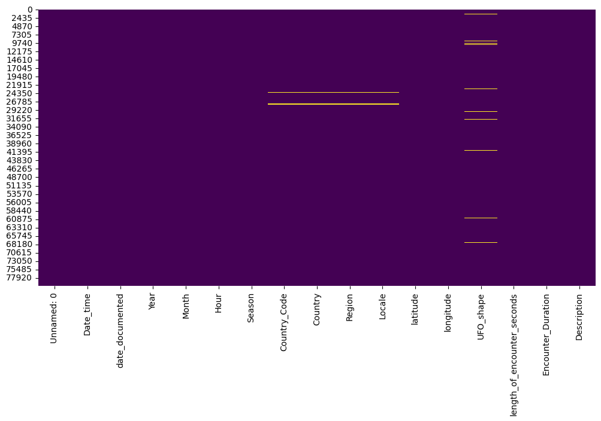
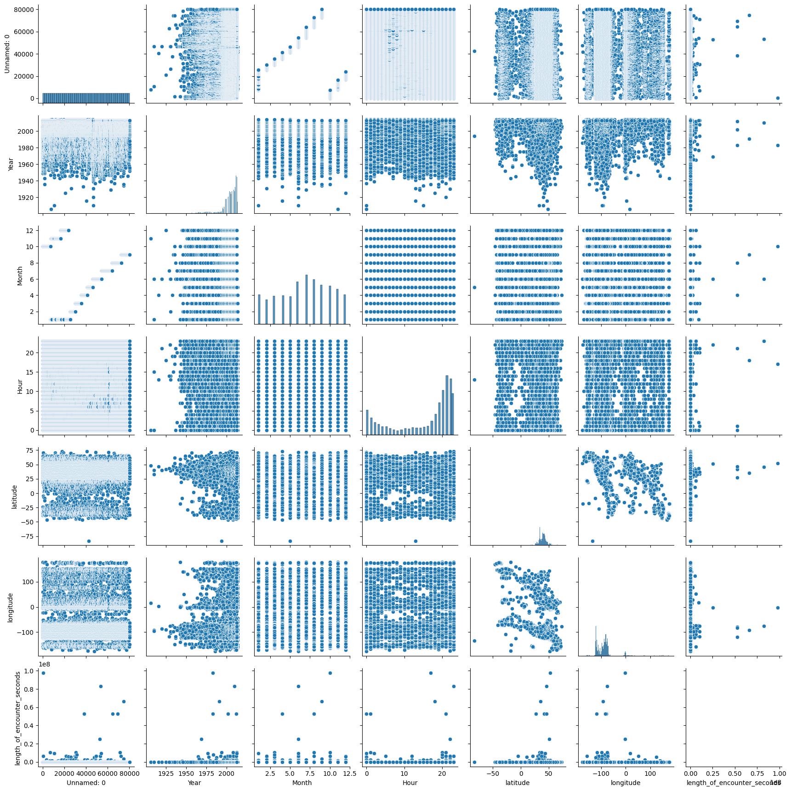

Almost every time I start a new project, I begin by performing a cursory analysis of the data set. This sort of high-level analysis gives me a general idea about the kind of data I’m working with, the size of the data set, and the types of relationships I may be interested in exploring.
I will be using the UFO Sightings dataset in this post to demonstrate useful methods for understanding your data. To get started, open the dataset in Kaggle and press the “Download” button and move the ufo-sightings-transformed.csv file into your working directory.
Install ipykernel if you haven’t already so you can keep your Jupyter notebook environment isolated.
poetry add ipykernel
%pip install pandas
Collecting pandas
Downloading pandas-2.2.2-cp312-cp312-macosx_11_0_arm64.whl.metadata (19 kB)
Collecting numpy>=1.26.0 (from pandas)
Downloading numpy-2.0.0-cp312-cp312-macosx_14_0_arm64.whl.metadata (60 kB)
━━━━━━━━━━━━━━━━━━━━━━━━━━━━━━━━━━━━━━━━ 60.9/60.9 kB 2.7 MB/s eta 0:00:00
Requirement already satisfied: python-dateutil>=2.8.2 in /Users/josephmuller/.pyenv/versions/3.12.3/lib/python3.12/site-packages (from pandas) (2.9.0.post0)
Collecting pytz>=2020.1 (from pandas)
Downloading pytz-2024.1-py2.py3-none-any.whl.metadata (22 kB)
Collecting tzdata>=2022.7 (from pandas)
Downloading tzdata-2024.1-py2.py3-none-any.whl.metadata (1.4 kB)
Requirement already satisfied: six>=1.5 in /Users/josephmuller/.pyenv/versions/3.12.3/lib/python3.12/site-packages (from python-dateutil>=2.8.2->pandas) (1.16.0)
Downloading pandas-2.2.2-cp312-cp312-macosx_11_0_arm64.whl (11.3 MB)
━━━━━━━━━━━━━━━━━━━━━━━━━━━━━━━━━━━━━━━━ 11.3/11.3 MB 55.8 MB/s eta 0:00:0000:010:01
Downloading numpy-2.0.0-cp312-cp312-macosx_14_0_arm64.whl (5.0 MB)
━━━━━━━━━━━━━━━━━━━━━━━━━━━━━━━━━━━━━━━━ 5.0/5.0 MB 54.7 MB/s eta 0:00:00a 0:00:01
Downloading pytz-2024.1-py2.py3-none-any.whl (505 kB)
━━━━━━━━━━━━━━━━━━━━━━━━━━━━━━━━━━━━━━━━ 505.5/505.5 kB 30.1 MB/s eta 0:00:00
Downloading tzdata-2024.1-py2.py3-none-any.whl (345 kB)
━━━━━━━━━━━━━━━━━━━━━━━━━━━━━━━━━━━━━━━━ 345.4/345.4 kB 25.6 MB/s eta 0:00:00
Installing collected packages: pytz, tzdata, numpy, pandas
Successfully installed numpy-2.0.0 pandas-2.2.2 pytz-2024.1 tzdata-2024.1
[notice] A new release of pip is available: 24.0 -> 24.1.1
[notice] To update, run: pip install --upgrade pip
Note: you may need to restart the kernel to use updated packages.
importpandas as pdfile_path ='ufo-sightings-transformed.csv'df = pd.read_csv(file_path)
Collecting seaborn
Downloading seaborn-0.13.2-py3-none-any.whl.metadata (5.4 kB)
Requirement already satisfied: numpy!=1.24.0,>=1.20 in /Users/josephmuller/.pyenv/versions/3.12.3/lib/python3.12/site-packages (from seaborn) (2.0.0)
Requirement already satisfied: pandas>=1.2 in /Users/josephmuller/.pyenv/versions/3.12.3/lib/python3.12/site-packages (from seaborn) (2.2.2)
Requirement already satisfied: matplotlib!=3.6.1,>=3.4 in /Users/josephmuller/.pyenv/versions/3.12.3/lib/python3.12/site-packages (from seaborn) (3.9.1)
Requirement already satisfied: contourpy>=1.0.1 in /Users/josephmuller/.pyenv/versions/3.12.3/lib/python3.12/site-packages (from matplotlib!=3.6.1,>=3.4->seaborn) (1.2.1)
Requirement already satisfied: cycler>=0.10 in /Users/josephmuller/.pyenv/versions/3.12.3/lib/python3.12/site-packages (from matplotlib!=3.6.1,>=3.4->seaborn) (0.12.1)
Requirement already satisfied: fonttools>=4.22.0 in /Users/josephmuller/.pyenv/versions/3.12.3/lib/python3.12/site-packages (from matplotlib!=3.6.1,>=3.4->seaborn) (4.53.1)
Requirement already satisfied: kiwisolver>=1.3.1 in /Users/josephmuller/.pyenv/versions/3.12.3/lib/python3.12/site-packages (from matplotlib!=3.6.1,>=3.4->seaborn) (1.4.5)
Requirement already satisfied: packaging>=20.0 in /Users/josephmuller/.pyenv/versions/3.12.3/lib/python3.12/site-packages (from matplotlib!=3.6.1,>=3.4->seaborn) (24.0)
Requirement already satisfied: pillow>=8 in /Users/josephmuller/.pyenv/versions/3.12.3/lib/python3.12/site-packages (from matplotlib!=3.6.1,>=3.4->seaborn) (10.4.0)
Requirement already satisfied: pyparsing>=2.3.1 in /Users/josephmuller/.pyenv/versions/3.12.3/lib/python3.12/site-packages (from matplotlib!=3.6.1,>=3.4->seaborn) (3.1.2)
Requirement already satisfied: python-dateutil>=2.7 in /Users/josephmuller/.pyenv/versions/3.12.3/lib/python3.12/site-packages (from matplotlib!=3.6.1,>=3.4->seaborn) (2.9.0.post0)
Requirement already satisfied: pytz>=2020.1 in /Users/josephmuller/.pyenv/versions/3.12.3/lib/python3.12/site-packages (from pandas>=1.2->seaborn) (2024.1)
Requirement already satisfied: tzdata>=2022.7 in /Users/josephmuller/.pyenv/versions/3.12.3/lib/python3.12/site-packages (from pandas>=1.2->seaborn) (2024.1)
Requirement already satisfied: six>=1.5 in /Users/josephmuller/.pyenv/versions/3.12.3/lib/python3.12/site-packages (from python-dateutil>=2.7->matplotlib!=3.6.1,>=3.4->seaborn) (1.16.0)
Downloading seaborn-0.13.2-py3-none-any.whl (294 kB)
━━━━━━━━━━━━━━━━━━━━━━━━━━━━━━━━━━━━━━━━ 294.9/294.9 kB 5.6 MB/s eta 0:00:00a 0:00:01
Installing collected packages: seaborn
Successfully installed seaborn-0.13.2
[notice] A new release of pip is available: 24.0 -> 24.1.1
[notice] To update, run: pip install --upgrade pip
Note: you may need to restart the kernel to use updated packages.
importseaborn as snsimportmatplotlib.pyplot as plt# Plot a heatmap of missing valuesplt.figure(figsize=(12, 6))sns.heatmap(df.isnull(), cbar=False, cmap='viridis')plt.show()

Plot Pairwise Relationships
# Plot pairwise relationships in the dataset (useful for numerical columns)# Warning - this may take a long time to execute if the dataset is largesns.pairplot(df)plt.show()

Display a Random Sample of Rows
# Display a random sample of rows (replace 5 with the desired number of rows)df.sample(5)
I’ve conveniently packaged these commands into a single code block you can turn into a handy snippet:
importpandas as pdimportseaborn as snsimportmatplotlib.pyplot as plt# Define the file path to the CSV filefile_path ='path/to/your/file.csv'# Load the CSV file into a DataFramedf = pd.read_csv(file_path)# Display the first few rows of the DataFrame# print(df.head())# Display the last few rows of the DataFrame# print(df.tail())# Display basic information about the DataFrame# print(df.info())# Display summary statistics for numerical columns# print(df.describe())# Display the column names# print(df.columns)# Display data types of each column# print(df.dtypes)# Check for missing values in each column# print(df.isnull().sum())# Display unique values in a specific column (replace 'column_name' with the actual column name)# print(df['column_name'].unique())# Display value counts for a specific column (replace 'column_name' with the actual column name)# print(df['column_name'].value_counts())# Display the shape of the DataFrame (number of rows and columns)# print(df.shape)# Display the correlation matrix for numerical columns# print(df.corr())# Plot histograms for numerical columns# df.hist(figsize=(10, 10), bins=30, edgecolor='black')# plt.tight_layout()# plt.show()# Plot a heatmap of missing values# plt.figure(figsize=(12, 6))# sns.heatmap(df.isnull(), cbar=False, cmap='viridis')# plt.show()# Plot pairwise relationships in the dataset (useful for numerical columns)# sns.pairplot(df)# plt.show()# Display a random sample of rows (replace 5 with the desired number of rows)# print(df.sample(5))
Below is the snippet form of this code which can be pasted into a VS Code snippets file.
{"Analyze DataFrame": {"prefix":"analyze_df","body": ["import pandas as pd","import seaborn as sns","import matplotlib.pyplot as plt","","# Define the file path to the CSV file","file_path = 'path/to/your/file.csv'","","# Load the CSV file into a DataFrame","df = pd.read_csv(file_path)","","# Display the first few rows of the DataFrame","# print(df.head())","","# Display the last few rows of the DataFrame","# print(df.tail())","","# Display basic information about the DataFrame","# print(df.info())","","# Display summary statistics for numerical columns","# print(df.describe())","","# Display the column names","# print(df.columns)","","# Display data types of each column","# print(df.dtypes)","","# Check for missing values in each column","# print(df.isnull().sum())","","# Display unique values in a specific column (replace 'column_name' with the actual column name)","# print(df['column_name'].unique())","","# Display value counts for a specific column (replace 'column_name' with the actual column name)","# print(df['column_name'].value_counts())","","# Display the shape of the DataFrame (number of rows and columns)","# print(df.shape)","","# Display the correlation matrix for numerical columns","# print(df.corr())","","# Plot histograms for numerical columns","# df.hist(figsize=(10, 10), bins=30, edgecolor='black')","# plt.tight_layout()","# plt.show()","","# Plot a heatmap of missing values","# plt.figure(figsize=(12, 6))","# sns.heatmap(df.isnull(), cbar=False, cmap='viridis')","# plt.show()","","# Plot pairwise relationships in the dataset (useful for numerical columns)","# sns.pairplot(df)","# plt.show()","","# Display a random sample of rows (replace 5 with the desired number of rows)","# print(df.sample(5))" ],"description":"Analyze a DataFrame with various commands commented out for selective use" }}